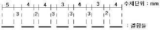
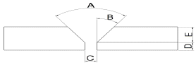

자기비파괴검사산업기사(구) (2013-03-10 기출문제)
1과목: 자기탐상시험원리
1. 자화 및 탈자의 정도를 알아볼 수 있는 계측기로써 정량적인 계측이 어려운 것은?
- FLUX METER
- GAUSS METER
- PIE FIELD INDICATOR
- OERSTED METER
(정답률: 알수없음)

2. 표면결함만을 검출대상으로 하는 경우에 주로 사용되는 전류는?
- 직류
- 교류
- 맥류
- 충격전류
(정답률: 알수없음)
3. 자분탐상검사에서 코어(core)에 코일을 감아서 선형자장을 만들려고 한다. 자속밀도와 코일의 감은 횟수 및 전류와의 상관관계로써 옳은 것은?
- 자속밀도는 전류의 세기에 비례하고 코일의 감은 횟수에 반비례한다.
- 자속밀도는 코일의 감은 횟수 및 전류의 세기에 비례한다.
- 자속밀도는 코일의 감은 횟수에 비례하고 전류의 세기에 반비례한다.
- 자속밀도는 코어(core)의 투자율에만 관계된다.
(정답률: 알수없음)
4. 자분탐상장치를 사용함에 있어 안전관리상 확인할 사항과 관계가 먼 것은?
- 전기회로의 전기저항 측정
- 전기적 단락 유무 확인
- 출력측의 전선 접속부에 대한 불량 여부 확인
- 주상변압기의 용량 확인
(정답률: 알수없음)
5. 다음 중 강봉의 자분탐상시험시 누설자속을 가장 많이 발생하는 것은?
- 균열
- 표면페인트
- 봉의 굽힘
- 자장의 반점
(정답률: 알수없음)
6. 자분탐상시험에서 자화할 때 시험체 표면의 자속밀도는 시험체의 포화자속밀도를 얼마 정도로 하는 것이 좋은가?
- 60~80%
- 70~80%
- 80~90%
- 90~100%
(정답률: 알수없음)
7. 시험체 표면에서 결함까지의 깊이 측정에 가장 적합한 검사법은?
- 방사선투과사진의 결함 농도 측정법
- 초음파탐상시험의 펄스 반사법
- 자분탐상시험의 자분 농도 측정법
- 와전류탐상시험의 출력전압의 진폭법
(정답률: 알수없음)
8. 자분탐상검사에서 자력선의 성질을 설명한 것 중 옳은 것은?
- 자력선의 방향은 자계방향과 수직이다.
- 자력선의 간격이 촘촘할수록 자계의 세기가 약하다.
- 자력선의 밀도는 그 점에서의 자계의 세기를 나타낸다.
- 자력선은 도중에 나누어지거나 2개의 자력선이 서로 만날 수 있다.
(정답률: 알수없음)
9. 침투탐상검사에 이용되는 3종류의 침투액에 해당되지 않는 것은?
- 수지 침투액
- 염색 침투액
- 형광 침투액
- 이원성 침투액
(정답률: 알수없음)
10. 시험체 주변에 압력차를 발생시켜 검사하는 비파괴검사법은?
- 누설검사법
- 자분탐상시험법
- 와전류탐상시험법
- 중성자투과시험법
(정답률: 알수없음)
11. 일반적인 초음파탐상검사에서 결함을 검출하기 위해 측정하는 것은?
- 초음파의 파장
- 초음파의 음속
- 초음파의 주파수
- 초음파의 반사강도
(정답률: 알수없음)
12. 50℃를 화씨(℉) 온도로 환산한 것으로 옳은 것은?
- 60℉
- 1⑤℉
- 122℉
- 154℉
(정답률: 알수없음)
13. 다음 중 비파괴검사(NDT)를 옳게 설명한 것은?
- 용접면을 절단하여 용접 상태를 알아보는 것
- 차후 사용에 영향을 주지 않고 대상체를 시험하는 것
- 에칭(etching)으로 금속 결정조직을 검사하는 것
- 굽힘시험(bend test)을 하여 굽힘면 바깥쪽의 균열을 알아보는 것
(정답률: 알수없음)
14. 물리적 현상의 원리에 따른 비파괴검사 방법을 분류한 것 중 틀린 것은?
- 광학-육안검사
- 열-누설검사
- 투과-방사선검사
- 전자기-와류탐상검사
(정답률: 알수없음)
15. 와전류탐상검사에서 와전류의 특성을 설명한 것 중 틀린 것은?
- 와전류는 항상 연속적인 회로로 흐른다.
- 와전류는 교번 전자기 안에서만 존재한다.
- 와전류는 코일의 가장 가까운 표면에서 가장 강하다.
- 와전류가 물체에 침투되는 깊이는 재료의 투자율과 비례적 관계를 갖는다.
(정답률: 알수없음)
16. 방사선의 종류와 성질에 대한 설명으로 옳은 것은?
- α선과 중성자선은 전자파의 일종이다.
- X선과 β선은 물질 투과력이 강하다.
- X선과 γ선은 물질의 원자번호나 밀도가 적을수록 흡수가 커져 투과하기 어렵다.
- 중성자선은 텅스텐, 납 등의 원소에는 흡수가 적은 성질이 있다.
(정답률: 알수없음)
17. 일반적인 형광침투탐상시험을 설명한 것으로 틀린 것은?
- 결함은 적색으로 나타난다.
- 자외선 조사등을 사용한다.
- 결함은 황록색으로 나타난다.
- 형광물질이 함유된 침투액을 사용한다.
(정답률: 알수없음)
18. 파괴시험을 정적시험과 동적시험으로 나눌 때 동적시험에 해당하는 것은?
- 경도시험
- 피로시험
- 인장시험
- 크리프시험
(정답률: 알수없음)
19. 시험체를 투과한 방사선에 대한 형광투시법의 단점을 설명한 것으로 옳은 것은?
- 필름이나 현상액 등 약품이 필요하다.
- 암실에서 작업을 해야 하는 불편이 따른다.
- 방사선투과시험보다 미세한 불연속의 검출이 어렵다.
- 스크린에서 밝은 빛을 발산하여 육안으로 관찰하기가 어렵다.
(정답률: 알수없음)
20. 표면결함 검출을 위한 각종 비파괴검사의 설명 중 옳은 것은?
- 자분탐상시험은 전도성이 강한 시험체에 모두 적용 가능하다.
- 침투탐상시험은 표면의 개구결함만 검출 가능하고, 강자성 재료에만 적용할 수 있다.
- 표층부 결함의 검출에 적합한 비파괴검사는 자분탐상시험, 침투탐상시험, 와전류탐상시험 등이 있다.
- 자분탐상시험은 결함에 의한 누설자장에서의 자분의 흡착 현상을 이용하고, 비자성재료에만 적용이 가능하며 개구해 있지 않는 표층부 결함은 검출이 어렵다.
(정답률: 알수없음)
2과목: 자기탐상검사
21. 자분탐상용 검사액에 대한 설명으로 옳은 것은?
- 검사액의 농도가 낮아지면 결함이 없는 지시부에는 자분이 부착되지 않고 결함부에만 자분이 부착되어 결함 지시 선명도가 높아진다.
- 검사액의 농도가 높으면 결함이 없는 부분에 부착되는 자분의 양이 많아져 결함지시 모양이 숨어버릴 가능성이 많아진다.
- 검사액의 농도와 결함지시와의 관계는 크게 상관이 없으며 농도가 높다는 것은 자분의 함량이 높아지므로 시험단가가 올라가는 효과가 있다.
- 형광자분의 경우 7~15g/ℓ 정도의 농도가 시험에 가장 적당하다.
(정답률: 알수없음)
22. 직류를 이용한 탈자는 30단계 정도의 반전 및 감소를 하면서 탈자한다. 이의 특징이 아닌 것은?
- 큰 부품에 좋은 효과를 준다.
- 3인치 이상의 직경을 가진 부품의 탈자에 좋다.
- 중심도체법에 좋은 효과를 준다.
- 선형자화한 부품에 한정적으로 사용한다.
(정답률: 알수없음)
23. 극간법에서 자극의 접촉부 및 그 주변부에 국부적으로 생기는 고밀도의 누설자속에 의해 형성되는 자분모양은?
- 재질 경계지시
- 자극지시
- 전극지시
- 오염지시
(정답률: 알수없음)
24. 자분탐상검사에서 자분의 자기적 성질에 대하여 올바른 것은?
- 보자력이 크면 잔류자기의 응집에 따른 분산성이 개선된다.
- 보자력이 작으면 잔류자기의 응집에 따른 분산성이 개선된다.
- 투자율이 낮을수록 결함부로의 흡착성이 좋다.
- 보자력 및 투자율은 자분의 자기적 성질에 관계하지 않는다.
(정답률: 알수없음)
25. 잔류법을 사용한 경우 자화조작 후 자분 관찰을 마칠 때까지 주의해야 할 행동으로 옳은 것은?
- 계속 바람을 불어 준다.
- 다른 시험품들과 같이 쌓아 놓는다.
- 강자성체를 시험체에 접촉시켜 놓는다.
- 자화조작 후 일정 시간 내에 관찰한다.
(정답률: 알수없음)
26. 압연봉재에 있는 시임(seam)을 검출하기 가장 쉬운 자분탐상시험법은?
- 선형자화
- 코일자화
- 원형자화
- 진동자장자화
(정답률: 알수없음)
27. 누설자속 탐상기의 장점이 아닌 것은?
- 고속탐상 가능
- 결함의 정량측정 가능
- 자동화 적합
- 복잡한 형상 적용 가능
(정답률: 알수없음)
28. 불연속(Discontinuity)에 의한 누설자속의 강도와 찌그러짐의 정도에 영향을 주는 요인으로 가장 거리가 먼 것은?
- 자력선의 수
- 결함의 깊이
- 결함의 폭
- 시험체의 부피
(정답률: 알수없음)
29. 직경이 1/2인치인 볼트를 축통전법으로 원형자화할 때 필요한 전류는 약 몇 [A]인가?
- 400[A]
- 800[A]
- 1000[A]
- 15000[A]
(정답률: 알수없음)
30. 자분탐상검사에서 사용되는 자분현탁 용액의 자분농도를 점검하는 방법은?
- 자분현탁 용액의 무게를 달아서 점검한다.
- 벤졸에 자분의 흡수시켜서 점검한다.
- 침전시험기로 자분현탁 용액을 회전시켜서 점검한다.
- 측정하려는 자분을 침전시켜서 점검한다.
(정답률: 알수없음)
31. 자분탐상검사를 실시한 시험품에 대한 후속 조치 중 바르지 않은 것은?
- 검사한 시험품을 취급하기 쉽게 하려고 하는 경우 탈자 한다.
- 연속하여 시험하는 자화가 앞선 자화에 의해 나쁜 영향을 받을 경우 탈자 한다.
- 시험품의 잔류자기가 이후의 기계가공에 나쁜 영향을 미칠 경우 탈자 한다.
- 시험품의 마찰부분에 쇳가루 등이 흡착하여 마모가 증가할 염려가 있는 경우 탈자 한다.
(정답률: 알수없음)
32. 직접접촉법에 의한 자화기기 중 스프링의 힘에 의해 시험체를 집을 수 있는 보조기기로써 소구경관의 시험에 적합한 것은?
- 크램프 접촉기
- 자극판 접촉기
- 프로드 전극
- 접촉용 동망
(정답률: 알수없음)
33. 다음 중 프로드법에서 탐상유효 범위에 영향을 미치는 탐상조건이 아닌 것은?
- 결함의 개수
- 통전시간 및 자분적용시간
- 자분 및 검사액
- 프로드 간격
(정답률: 알수없음)
34. 자분탐상검사를 하기 전에 기름이나 그리스의 얇은 막을 제거하기 위해 사용되는 방법으로 거리가 먼 것은?
- 용제로 세척한다.
- 증기 세척법으로 세척한다.
- 분필이나 활석가루를 뿌린 다음 건조된 천으로 닦아낸다.
- 쇠솔로 표면을 솔질한다.
(정답률: 알수없음)
35. 검사 중 나타난 자분지시가 결함인지 의사지시인지 불분명 할 때에 취해야 할 조치로 틀린 것은?
- 한번 더 자기탐상하고 그래도 분명하지 않을 때에는 의사 지시로 간주한다.
- 다른 검사방법으로 확인한다.
- 탈자 후 재검사 한다.
- 표면을 매끄럽게 처리 후 재검사한다.
(정답률: 알수없음)
36. 자외선등(Black Light Lamp)은 정기적으로 강도를 측정하여야 하는데 그 측정 부위로 옳은 것은?
- 광원부에서 측정한다.
- 시험체 표면부에서 측정한다.
- Filter 표면부에서 측정한다.
- Filter와 시험체의 중간지점에서 측정한다.
(정답률: 알수없음)
37. 다음 중 피로균열과 같은 미세한 표면결함 검출에 가장 효과적인 자분탐상검사 방법은?
- 반파 정류를 이용한 건식자분
- 직류를 이용한 습식자분
- 직류를 이용한 건식자분
- 교류를 이용한 습식자분
(정답률: 알수없음)
38. 시험체의 축에 대하여 직각방향으로 직접 전류를 흐르게 하여 자화시키는 방법은?(오류 신고가 접수된 문제입니다. 반드시 정답과 해설을 확인하시기 바랍니다.)
- 자속관통법
- 극간법
- 시험체의 표면상태
- 시험체의 전기전도도
(정답률: 알수없음)
39. 강자성체의 자분탐상검사법에서 자화방법을 선정할 때 고려해야 할 사항과 가장 거리가 먼 것은?
- 결함의 방향성
- 시험체의 형태
- 시험체의 표면상태
- 시험체의 전기전도도
(정답률: 알수없음)
40. 다음의 자분탐상시험 중 시험체에 직접 전류를 흘려 시험체를 자화하는 방법이 아닌 것은?
- 전류관통법
- 축통전법
- 프로드법
- 직각통전법
(정답률: 알수없음)
3과목: 자기탐상관련규격및컴퓨터활용
41. 철강 재료의 자분탐상 시험방법 및 자분모양의 분류(KS D0213)에 의한 전처리에 대한 설명으로 잘못된 것은?
- 전처리 범위는 시험범위보다 넓게 잡아야 한다.
- 전처리시 시험체는 원칙적으로 분해하지 말아야하며 분해 시 자분에 의한 손상을 막을 수 있다.
- 전처리시 통전효과를 좋게 하기 위해 시험체와 전극의 접촉부분을 깨끗하게 닦는다.
- 전처리시 시험체가 시험전 자화되어 있을 경우 필요에 따라 탈자토록 한다.
(정답률: 알수없음)
42. 철강 재료의 자분탐상 시험방법 및 자분모양의 분류(KS D0213)에 따라 그림과 같이 결함과 그 사이의 간격들을 위에 나타내고 아래가 결함일 때, 자분모양의 판정시 총 몇개의 자분모양으로 판정하아여 하며, 이 결함 중 가장 긴 자분모양의 길이는 몇 mm인가?

- 5개, 5mm
- 7개, 5mm
- 5개, 10mm
- 5개, 9mm
(정답률: 알수없음)
43. 철강 재료의 자분탐상 시험방법 및 자분모양의 분류(KS D0213)에서 용접부의 경우 시험범위보다 전처리 범위를 얼마나 넓게 잡도록 규정하는가?
- 약 10mm
- 약 20mm
- 약 50mm
- 약 100mm
(정답률: 알수없음)
44. 보일러 및 압력용기에 대한 자분탐상시험(ASME Sec. V Art. 25 SE-709)에서 형광자분을 사용하여 시험할 때 암실에서의 조도는 얼마 이하이어야 하는가?
- 20 Lux
- 30 Lux
- 50 Lux
- 90 Lux
(정답률: 알수없음)
45. 보일러 및 압력용기에 대한 자분탐상검사(ASME Sec. V Art. 7)규격에서 모재두께가 24mm인 강 용접부를 6인치의 프로드 간격으로 자분 탐상하였을 경우 필요한 전류 범위는?
- 600~750 A
- 580~680 A
- 540~660 A
- 450~600 A
(정답률: 알수없음)
46. 보일러 및 압력용기에 대한 자분탐상검사(ASME Sec. V Art. 7)에 따라 염색자분을 사용한 경우 지시를 판독하기 위한 시험체 표면에서의 조도(Lux)는 최소한 얼마가 되어야 하는가?
- 500
- 1000
- 5000
- 10000
(정답률: 알수없음)
47. 철강 재료의 자분탐상 시험방법 및 자분모양의 분류(KS D0213)에 규정한 의사모양에 해당되지 않는 것은?
- 오염지시
- 자극지시
- 자기펜지시
- 표면거칠기지시
(정답률: 알수없음)
48. 보일러 및 압력용기에 대한 자분탐상검사(ASME Sec. V Art. 7)에서 검사체 두께가 3/4인치(19mm) 미만일 때 프로드 간격에 대한 자화전류의 범위는 몇 [A/인치]인가?
- 60~75
- 70~90
- 90~110
- 100~125
(정답률: 알수없음)
49. 보일러 및 압력용기에 대한 자분탐상검사(ASME Sec. V Art. 7)에서 교류의 자화전류를 사용하는 요크 장비의 리프팅 파워는 얼마 이상이어야 하는가?
- 3.5Kg
- 4.5Kg
- 8.5Kg
- 9.5Kg
(정답률: 알수없음)
50. 보일러 및 압력용기에 대한 자분탐상검사(ASME Sec. V Art. 7)에서 규정하고 있는 자화방법에 해당되지 않는 것은?
- Prod 법
- 선형 자화법
- 원형 자화법
- 간접 자화법
(정답률: 알수없음)
51. 보일러 및 압력용기에 대한 자분탐상검사(ASME Sec. V Art. 7)에서 블랙라이트(black light)을 사용하기 전 최소 예열 시간은?
- 3분
- 5분
- 10분
- 15분
(정답률: 알수없음)
52. 철강 재료의 자분탐상 시험방법 및 자분모양의 분류(KS D0213)에 따라 잔류법을 적용하고자 하는 경우 통전시간의 설정은 어떻게 하는가?
- 원칙적으로 1/4 ~ 1초로 한다.
- 원칙적으로 1 ~ 5 초로 한다.
- 원칙적으로 5 ~ 10 초로 한다.
- 충분한 강도를 얻기 위해 가능한 한 긴 시간으로 한다.
(정답률: 알수없음)
53. 철강 재료의 자분탐상 시험방법 및 자분모양의 분류(KS D0213)에서 자화방법에 따른 기호 분류가 틀리게 연결된 것은?
- 축통전법 - EA
- 자속관통법 - I
- 전류관통법 - EB
- 직각통전법 - ER
(정답률: 알수없음)
54. 철강 재료의 자분탐상 시험방법 및 자분모양의 분류(KS D0213)에서 자분 성능을 판정할 때에 사용되고 있는 자성 측정방법으로 틀린 것은?
- 자기 천칭을 사용한 법
- 솔레노이드 코일을 사용하는 법
- 3차원 측정기를 이용하는 법
- 자기 히스테리시스 곡선을 구하는 법
(정답률: 알수없음)
55. 철강 재료의 자분탐상 시험방법 및 자분모양의 분류(KS D 0213)를 적용하여 축통전법에 의해 자분탐상 시험할 때 적정 암페어는 무엇에 의해 결정되는가?
- 두께에 의해서
- 형상에 의해서
- A형 시험편 적용 결과에 의해서
- B형 시험편 적용 결과에 의해서
(정답률: 알수없음)
56. 철강 재료의 자분탐상 시험방법 및 자분모양의 분류(KS D0213)에서 자기펜 자국에 의한 지시로 볼 수 있는 것은?
- 시험체가 서로 접촉했을 때 형성되는 자분모양
- 용접부의 용접금속과 모재의 경계부위에 형성되는 자분모양
- 냉간가공의 표면 가공도가 다른 부분에 생기는 자분모양
- 단조품 또는 압연품의 메탈플로우부에 생기는 자분모양
(정답률: 알수없음)
57. 보일러 및 압력용기에 대한 표준자분탐상검사(ASME Sec. V Art. 25 SE-709)에 따르면 습식자분의 자분 분산 함유량은 어떻게 측정하는가?
- 분산액의 전체 무게를 측정
- 벤졸(benzol)에 흡수되는 고체의 무게를 측정
- 침적시켜 그 침전량을 측정
- 자석에 붙는 무게를 측정
(정답률: 알수없음)
58. 보일러 및 압력용기에 대한 자분탐상검사의 합격기준(ASME Sec. Ⅷ Div. 1 App. 6)에서 관련지시로 간주하는 지시모양의 길이 기준은?
- 1/32인치 이하
- 1/32인치 초과
- 1/16인치 이하
- 1/16인치 초과
(정답률: 알수없음)
59. 철강 재료의 자분탐상 시험방법 및 자분모양의 분류(KS D0213)에서 시험체 자화전류의 종류가 아닌 것은?
- 직류식
- 정류식
- 충격 전류식
- 맴돌이 전류식
(정답률: 알수없음)
60. 철강 재료의 자분탐상 시험방법 및 자분모양의 분류(KS D0213)에 따른 탐상시험 기록의 기호 표시로 틀린 것은?
- 교류 : ~
- 직류 : -
- 충격전류 : ∧
- 맥류 : ⓦ
(정답률: 알수없음)
4과목: 금속재료 및 용접일반
61. 1200K 이상의 고온에서 강도나 크리프 특성을 개선하기 위하여 Fe, Ni 합금을 기재로 한 섬유강화초합금은?
- PSM
- FRS
- MMC
- FRM
(정답률: 알수없음)
62. Ti에 대한 설명 중 틀린 것은?
- 상온에서는 침상의 α-Ti 조직이다.
- Ti는 활성이 커서 고온산화 되기 쉽다.
- Ti판재는 압연방향과 압연직각방향의 인장강도가 항상 같다.
- 상온에서 부동태피막이 잘 형성되어 내식성이 우수하다.
(정답률: 알수없음)
63. Zn 40% 내외의 6:4 황동(α+β 조직)으로 인장강도가 크며 열교환기, 열간 단조형 등으로 사용되는 황동은?
- 톰백
- 포금
- 문쯔 메탈
- 센더스트
(정답률: 알수없음)
64. 수소 저장용 합금에 대한 설명으로 옳은 것은?
- 수소를 흡장할 때 수축하고, 방출할 때 팽창한다.
- 수소 저장용 합금은 질소가스와 반응하여 금속수소화물이 된다.
- 수소로 인하여 전기저항이 완전히 0(zero)이 되는 합금을 말한다.
- 수소가 방출된 금속수소화물은 원래의 수소 저장용 합금으로 되돌아간다.
(정답률: 알수없음)
65. 슬립(Slip)에 대한 설명 중 틀린 것은?
- 슬립의 저항이 증가하면 강도가 증가한다.
- 외력에 의한 전위의 이동을 슬립이라고 부른다.
- 슬립은 원자밀도 최대의 면에서 원자밀도 최대의 방향으로 일어난다.
- HCP격자 구조를 갖는 금속에서는 최소 12개의 슬립 시스템이 존재하여 가장 용이하게 일어난다.
(정답률: 알수없음)
66. 순철에서 가열시 αFe → γFe로 바뀌는 동소변태온도는 몇℃인가?
- 210℃
- 723℃
- 910℃
- 1400℃
(정답률: 알수없음)
67. 주철을 설명한 것 중 틀린 것은?
- 공정주철은 탄소의 함량이 약 4.3% 정도이다.
- 주철의 조성과 조직과의 관계를 나타낸 것을 마우러 조직도라 한다.
- 가단주철은 주철용탕에 Mg, Ca, Si 등을 접종해서 응고후에 구상흑연으로 만든 것이다.
- 주철 중 흑연의 형상과 분포는 ASTM 분류법에 따라 회주철, 백주철, 반주철 등으로 분류한다.
(정답률: 알수없음)
68. 탄소강에서 상온취성의 원인이 되는 원소는?
- P
- Mn
- C
- Si
(정답률: 알수없음)
69. Al-Si 합금에 대한 설명으로 옳은 것은?
- 개량처리를 하게 되면 조직이 조대화 된다.
- γ-실루민은 Al-Si 합금에 Mg을 넣어 시효성을 준 합금이다.
- 포정점 부근의 조성의 것을 실루민이라 하며 실용으로 사용한다.
- 실루민은 용융점이 높고 유동성이 좋지 않아 복잡한 사형주물에는 사용할 수 없다.
(정답률: 알수없음)
70. 특수강에 첨가되는 원소의 일반적인 특성으로 틀린 것은?
- Cr : 내식성 증가
- Ni : 인성 증가
- Mo : 뜨임 취성 방지
- Si : 전자기적 특성 저하
(정답률: 알수없음)
71. 연강판 점 용접 이음부 설계시 판 두께가 0.4 ~ 0.6 mm일 때 최소피치로 가장 적합한 것은?
- 3~5mm
- 8~10mm
- 15~17mm
- 23~25mm
(정답률: 알수없음)
72. TIG용접에 사용되는 전극봉 재료의 구비조건으로 틀린 것은?
- 전자 방출이 잘 될 것
- 전기 저항률이 높을 건
- 열전도성이 좋을 것
- 용융점이 높을 것
(정답률: 알수없음)
73. 서브머지드 아크 용접으로 편면 용접(one side welding)시 시작부의 균열 결함 원인으로 가장 적합한 것은?
- 와이어 중심잡기(centering)가 불량하다.
- 메탈 파우더의 산포량이 과대하다.
- 용접선과 용제 산포선의 위치가 일치한다.
- 시작부에 실링비드(sealing bead)가 없다.
(정답률: 알수없음)
74. 용접 시공시, 잔류응력을 감소시키는 방법과 가장 관계가 적은 것은?
- 예열을 할 것
- 적절한 용착법을 선정할 것
- 용접순서를 지킬 것
- 용착 금속의 양을 많이 증가시킬 것
(정답률: 알수없음)
75. 용접부 바깥면에 나타나는 피트(Pit)의 발생원인과 가장 관계가 적은 것은?
- 용접 조건의 부적당
- 용접 자세 불량
- 청결상태가 불량한 모재
- 용접봉의 습기
(정답률: 알수없음)
76. 맞대기 용접 이음 홈의 각부 명칭으로 올바른 것은?

- A : 베벨각, B : 홈 각도, C : 루트 간격, D : 루트 면
- A : 베벨각, B : 홈 각도, C : 루트 면, D : 루트 간격
- A : 홈 각도, B : 베벨각, C : 루트 면, D : 루트 간격
- A : 홈 각도, B : 베벨각, C : 루트 간격, D : 루트 면
(정답률: 알수없음)
77. 이음 형상에 따른 전기 저항 용접의 분류에서 맞대기 용접에 해당하는 것은?
- 스폿 용접
- 심 용접
- 업셋 용접
- 프로젝션 용접
(정답률: 알수없음)
78. 내용적이 40L인 산소용기의 고압측 압력계가 80 Kgf/cm2으로 나타났다면 가스용접기의 200번 팁(tip)을 사용할 경우 표준불꽃으로 몇 시간 동안 사용이 가능한가?
- 10시간
- 14시간
- 16시간
- 32시간
(정답률: 알수없음)
79. 점 용접의 3대 요소가 아닌 것은?
- 도전율
- 전류의 세기
- 가압력
- 통전 시간
(정답률: 알수없음)
80. 피복제 중에 석회석(CaCO3)이나 형석(CaF2)을 주성분으로 하고 용착금속중의 수소 함유량이 다른 용접봉에 비해서 1/10정도로 현저히 적은 용접봉은 어느 것인가?
- 일미나이트계
- 라임티탄계
- 저수소계
- 고셀룰로스계
(정답률: 알수없음)